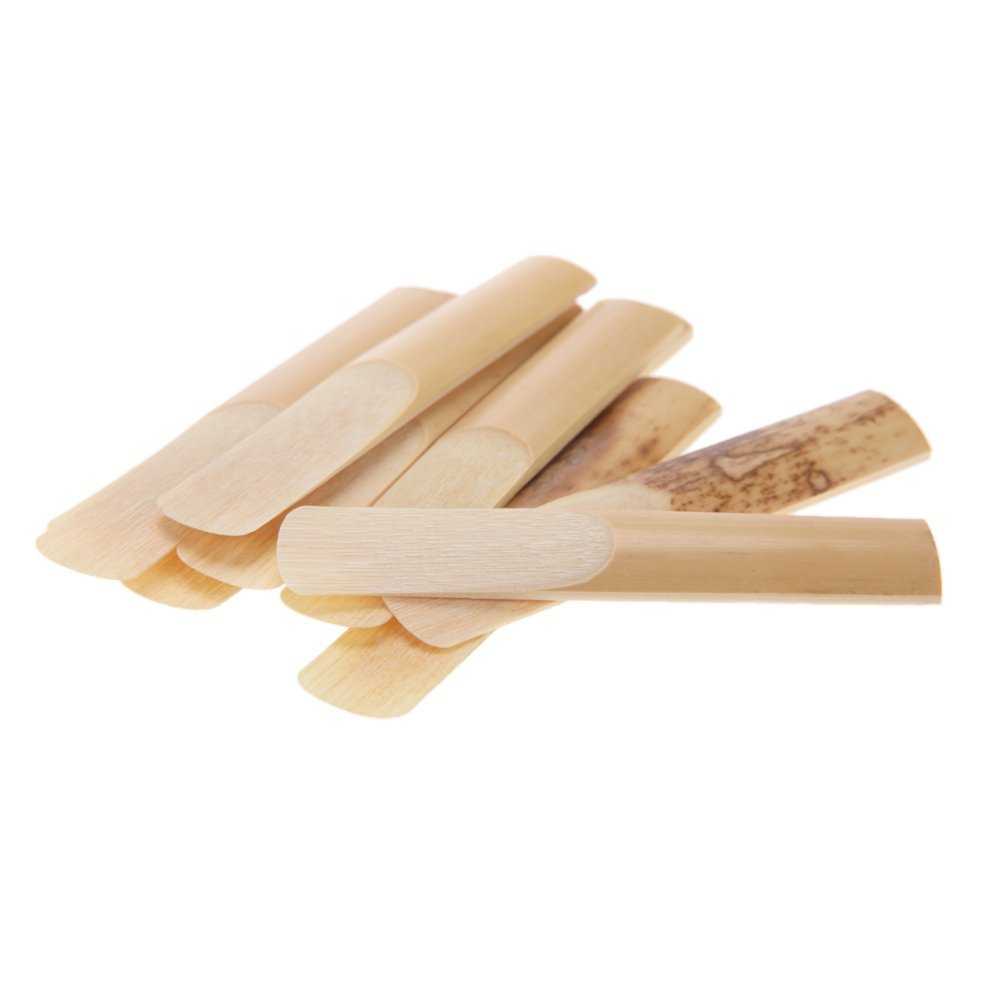
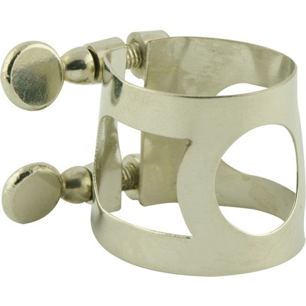
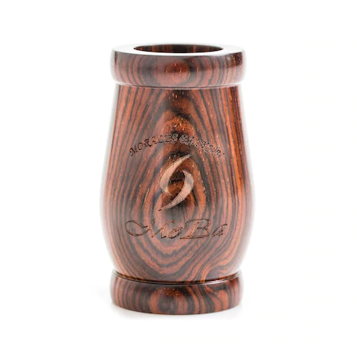
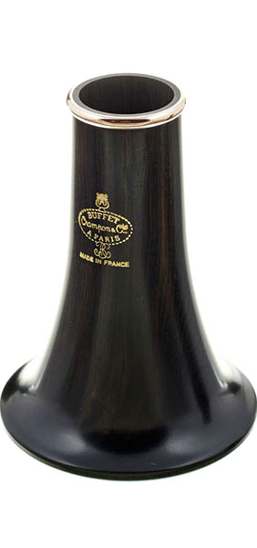

Klarnetin Parçaları
Klarnetler, yedi parçanın birleşmesinden oluşur, bunlar:
- Ağızlık (Bek)
- Kamış
- Bilezik
- Fıçı (Barel)
- Üst Gövde
- Alt Gövde (Şalümo)
- Kalak
Ağızlık (Bek)
Klarnette oluşan ses dalgalarının dışarı iletiminden görevli olan ve çalım esnasında ağzın içinde kalan bölüme ‘bek’ denir. Klarnetin can damarı olan bu parçanın kalitesi direkt olarak klarnetten çıkan seslere etki etmektedir. Bu yüzden kaliteli bir ağzılık kullanmak, güzel sesler çıkarmak ve bu sesleri elde etme aşamasında daha fazla kolaylık sağlamak açısından oldukça önemlidir. Açık ve kapalı olarak bekler 2 gruba ayrılmaktadır. Açık bek genellikle sol klarnet ile birlikte tercih edilirken, kapalı bek si bemol ve diğer klarnet çeşitlerinde yaygın olarak kullanılmaktadır. Bu 2 bek çeşidi arasındaki fark, uç kısımlarının açılarının farklı olmasıdır. Sol klarnet ile genellikle Türk Müziği notaları icra edildiği için açık bek kullanılmaktadır. Bunun sebebi ise açık bekte dudak sıkıştırma ve gevşetme hareketlerinin daha kolay yapılmasından kaynaklanmaktadır. Böylece çok küçük ara sesler olarak adlandırdığımız komalar kapalı ağızlığa göre çok daha kolay şekilde çalınabilmektedir.

Kamış
Ağızlık bölümünün üstünde yer alan boşluğun arkasına yerleştirilen, ince ve uca doğru hafif eğimli bir yapıya sahip olan tahtaya kamış adı verilmektedir. Kamış, bekin ayrılmaz bir parçasıdır ve bu iki parçanın uyumu seslerin kolay çıkması ve dudak pozisyonlarının rahat yapılabilmesi için oldukça kritiktir. Eğer ki bek seçimi konusunda bilginiz yoksa mutlaka ders aldığınız eğitmenden ya da deneyimli birinden tavsiye almanız tavsiye edilir. Kamışlar 1 ila 5 arasında sertlik ve yumuşaklıklarına göre numaralandırılmıştır. 1 en yumuşak kamış olurken, 5 numara en sert kamış modelidir. Ağızlığa ve çalınacak tarza uygun kamış seçimi, seslendirilecek süslemelerde ( dil vurma, çarpma, ses titretme ) çalan kişiye oldukça fazla avantaj sağlamaktadır. Sol klarnet kullanan kişiler genellikle, yumuşak kamışlardan olan 1 ve 1,5 numarayı tercih etmektedir.

Bilezik
Kamış ile ağızlığı birbirine sabitleyen ve kamışın bekten kaymasını engelleyen metal aksama bilezik denmektedir. Klarnet parçaları arasında yer alan bileziğin önceleri ses üzerinde herhangi bir etkisi olmadığı söylendiyse de günümüzde önemli firmaların yaptığı araştırmalara göre diğer parçalara oranlandığında çok az kalsa bile bileziğinde sesler üzerinde etkisi bulunmaktadır. Satın alınan klarnetin üzerinde kendiliğinden bulunan bu aparat, çoğunlukla metalden üretilse de yerine göre deri malzeme kullanılan bileziklere de rastlamak mümkündür. Ancak bileziğin dayanıklılığı açısından metal olanları tercih etmek daha avantajlı olacaktır.

Fıçı (Barel)
Barel, klarnet akordunda hayati önem taşıyan bir parçadır. Klarnet parçaları arasında ağızlıktan sonra gelen en önemli parça olarak adlandırılan bu bölüm, genellikle kısa ve uzun olmak üzere 2’li parça olarak temin edilmektedir. Kullanılan parçaya göre klarnet akordunda değişiklik sağlanmakta olup, uzun barel tonun kalınlaşmasını, kısa barel ise tonun incelmesini sağlamaktadır.

Üst ve Alt gövde
Klarnet tutuşunda sol elin yer aldığı bölüm olarak adlandırılan üst gövde, klarnetin barile ilk temas eden noktasıdır. Üzerinde 4 tane ses boşluğu bulunduran üst bölümde, ses deliklerinin çevresinde metal perdeler ve üstünde yine metal üretim yüzükler yer almaktadır. Alt gövde ise, üst gövdeyle birbirine bağlanan klarnetin alt kısmıdır. Klarnet tutuşunda bu bölüme sağ el konumlandırılmaktadır. Alt gövdenin yüzeyinde 3 ses boşluğu ve yüzeyin altında kalan bölgede ise tutuş esnasında yorgunluğun azaltılması amacıyla destek uzantısı bulunmaktadır. Sağ elin başparmağının konulduğu bu uzantı, aynı zamanda klarnetin dengesinin sağlanmasından sorumludur.

Kalak
Klarnetin en ucunda bulunan oval bir yapıya sahip, alt bölümle bağlantılı olan parçasıdır. Ağızlıkta üretilen ses buradan çıkış yapar ve sesin oluşumundan sonra sesin iletimi bu bölümde gerçekleşir. Oval yapısından dolayı ses buradan çıktığında yayılmacı olarak ilerler ve kalak bölümü klarnetin akordunun doğru olması için mutlaka gerekli bir parçadır.
Müzik, gökle toprak arasında bir ahenktir.
Konfüçyus